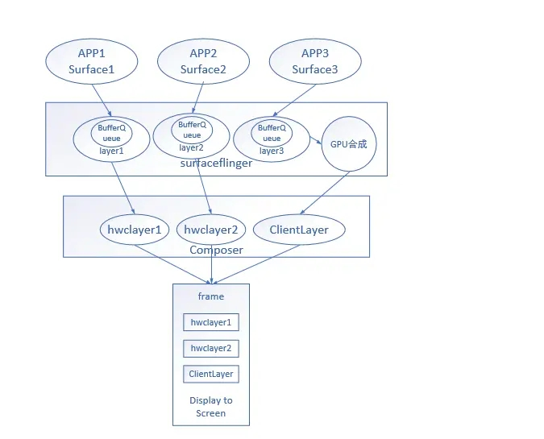
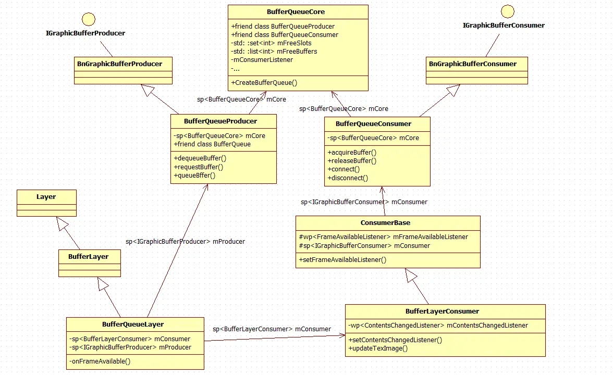
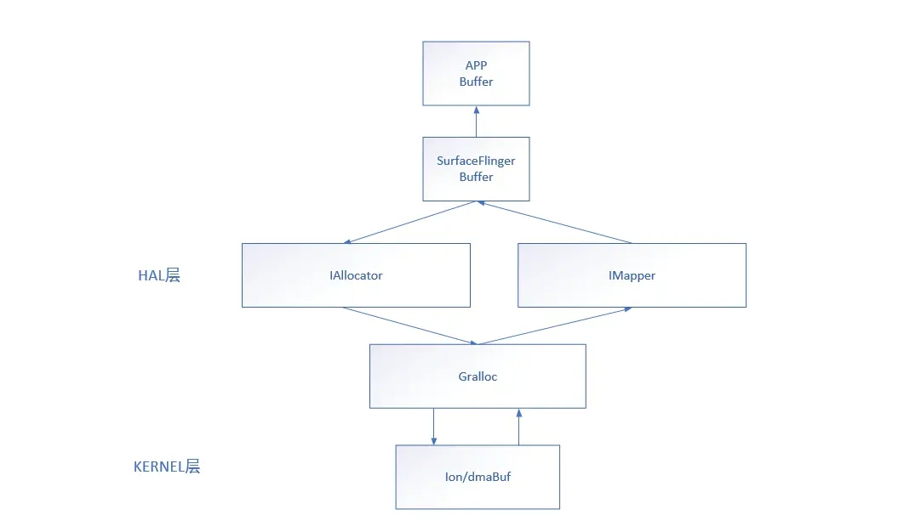

显示框架之app与SurfaceFlinger通信
SurfaceFlinger是android显示的核心进程，在整个显示框架中起到一个承上启下的作用，“承上”指的是与app进程间的通信，“启下”指的是与Composer进程的通信。Surfaceflinger本身不进行绘制，是app数据上屏的中枢通路，先来看下SurfaceFlinger在整个显示流程中的位置。

从显示流程图看可知，SurfaceFlinger位于中间层的位置，目前的应用会调起renderthread使用GPU来渲染，应用侧使用surface来管理显示数据，surfaceflinger使用layer来对应应用侧的surface，surfaceflinger会根据合成的方式，选择device还是GPU合成，最后将layer数据提交给Composer进程，进而通过display 驱动上屏。本文就来研究下app和SurfaceFlinger之间的通信，主要针对native层的分析，代码基于android11。
APP与SurfaceFlinger之间的连接
首先框架会创建surfaceControl来管理surface，在jni层会创建一个surfaceComposerClient对象，这个对象是负责与SurfaceFlinger进程通信的重要载体。
1 | 文件：frameworks/base/core/jni/android_view_SurfaceControl.cpp |
看注释，至此完成了从SurfaceControl-> SurfaceComposerClient -> SurfaceFlinger的连接过程。应用要创建Surface时，对应SurfaceFlinger会创建layer与之对应。
1 | 文件：frameworks/native/libs/gui/SurfaceComposerClient.cpp |
看注释，SurfaceFlinger侧创建了handle和GraphicsBufferProducer对象给到SurfaceControl，handle 指向surfaceflinger的layer，GraphicsBufferProducer 提供surface对Buffer的操作接口，上层操作surface的handle来作用到surfaceflinger的layer。至此，surfaceflinger创建layer的流程分析完了，比较绕的地方是涉及BufferQueue对象之间的关系，用一副类的关系图来说明之间的关系。

APP与SurfaceFlinger之间数据的传递
现在应用一般采用GPU去渲染加速，GPU操作在RenderThread里(HWUI 里面的逻辑很复杂，后续会进行剖析)，应用要绘制数据首先需要申请一块Buffer，由前面分析可知，应用是一个GraphicsBufferProducer的角色，故可以通过dequeueBuffer来向surfaceflinger申请一块Buffer。
DequeueBuffer
1 | 文件： frameworks/native/libs/gui/Surface.cpp |
应用的surface执行dequeueBuffer是在应用进程，具体实现是通过BufferQueueProducer的dequeueBuffer，是在SurfaceFlinger进程，所以需要通过requestBuffer将Buffer映射到应用进程，具体实现是通过importBuffer。真正分配Buffer的地方是在ion，ion是怎么分配Buffer的，以及Buffer怎么实现app和SurfaceFlinger共享，先用一张简图概述下，后续会分析。

至此app就拿到了可绘制的Buffer，GPU可以将数据渲染到这块Buffer上。GPU将数据渲染到Buffer后，会执行eglSwapBuffers交换front和back buffer，eglSwapBuffers会调用queueBuffer，android系统用queueBuffer来请求vsync 唤醒SurfaceFlinger刷新。
queueBuffer
1 | 文件: frameworks/native/libs/gui/Surface.cpp |
根据类图关系，frameAvailableListener 实际上是ConsumerBase 对象，在ConsumerBase 初始化的时候进行赋值，通过 mConsumer->consumerConnect(proxy, controlledByApp)接口，所以会调到ConsumerBase::onFrameAvailable， 而mFrameAvailableListener 是BufferQueueLayer -> setContentsChangedListener(mContentsChangedListener) 设的，实际上是 BufferQueueLayer对象，因此最后走到BufferQueueLayer::onFrameAvailable 逻辑里面了。
1 | 文件： frameworks/native/services/surfaceflinger/BufferQueueLayer.cpp |
让Surfaceflinger刷新需要2个必要条件： 1. 有requestNextVsync 的请求 2. 软件vsync计算模型回调 onVSyncEvent创建一个vsyncEvent，涉及到vsync模型，后面会介绍。
到这里，app完成了与SurfaceFlinger的连接以及将应用数据传给到SurfaceFlinger。这里需要注意的是，其实SurfaceFlinger并不会动Buffer里面的数据，只是中间传递的一个过程，Buffer数据是由GPU渲染，display显示，下篇分析下SurfaceFlinger在刷新时做了哪些动作。
This is copyright.